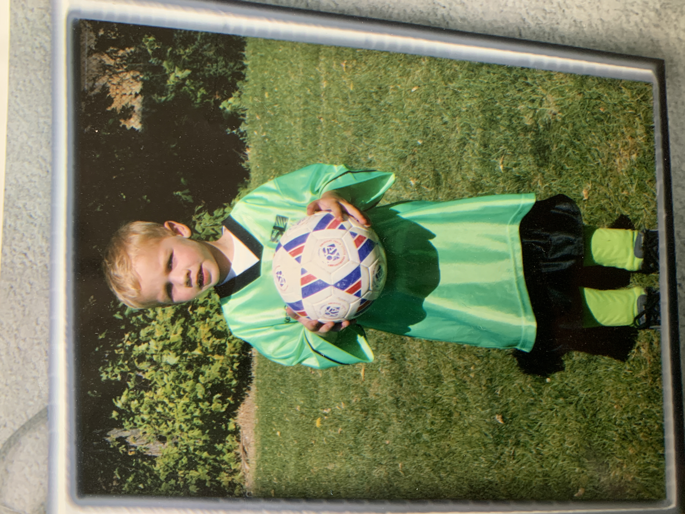

Skills from Sports
Soccer was my passion growing up. I played up until I was a senior where I was unable to play due to an injury. I loved cooperating and learning to be a team player. I also started playing American Football for my high school Freshman year and played all 4 years. I learned many leadership skills and had experience with failure and growth from failure. Then in my sophomore year of high school I began and excelled in volleyball. It was a super fun sport and I really fell in love with it. Volleyball really was a great experience and I learned teamwork in volleyball better than any other sport that I had ever previously played. You had to trust in your teammates often.
Learned Skills
Over the years I have had the opportunity to learn a lot through other leaders and mentors and my life. My fathertaught me how to be the young man I am. I love him and he has taught me to be authentic. I've used many tools in my occupations both physical and mental. Yard tools, leadership tools, and machinery. But above all that is my learned skill of service. I have done countless service projects as part of my religion. We just love to help other people out. I have helped over 30 families move in and out of homes, several clean-ups on local trials and at parks, and many events were we provide food and get to know our neighbors better. The events at times are long and hard work, but the satisfaction of completing them and knowing you helped out your community is one of the greatest feelings of accomplishment.
The dreams of yesterday are the hopes of today and the reality of tomorrow.
Rank of Importance (Skills I've Learned)
- Work Ethic
- Leadership
- People Skills
- Negotiation/Communication